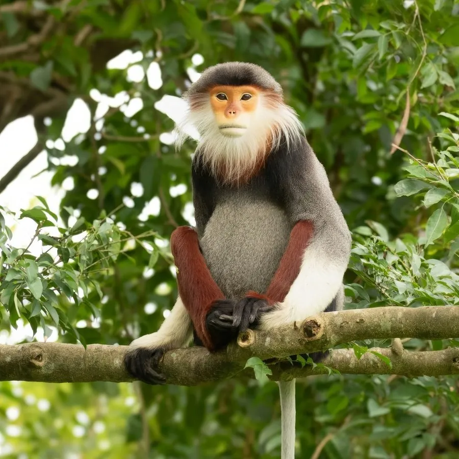

哺乳动物 · 动物界
白臀叶猴 Pygathrix nemaeus

中南半岛雨林中色彩最艳丽的叶猴，灰身、白臀、栗红小腿配橙色面颊，因毛皮艳丽遭严重偷猎，被列为极危物种。
- 分类
- 门脊索动物门纲哺乳纲目灵长目科猴科属白臀叶猴属
- 栖息环境
- 低地热带常绿雨林与河岸森林的树冠层
- 地理分布
- 越南中部与南部、老挝中部、柬埔寨东北部
- 保护级别
- IUCN 极危（CR）；CITES 附录Ⅰ
物种志
白臀叶猴的毛色在灵长类中极为罕见：头颈与背部呈灰蓝至银灰色，臀部与尾基为亮白色，大腿至小腿外侧呈栗红色，前臂与手为灰黑色，面部橙黄，眼周有一圈浅色毛，喉部白色并与胸前红褐色毛带相接，像披着一件拼色披风。成年体重约 8–11 千克，体长约 55–65 厘米，尾长超过身体。
它们栖息于越南、老挝与柬埔寨的低地常绿雨林，生活在 20–40 米高的树冠层，极少下地。食性以嫩叶、嫩芽和果实为主，胃部结构适应消化坚韧的树叶，进食时常坐着慢慢咀嚼，之后长时间静息。猴群由十余只至数十只组成，包含多只成年雄性，群体内很少发生激烈争斗。由于毛皮和传统药材需求，盗猎压力极大，加之栖息地被道路与农田切割，其种群在近数十年急剧下降。
形态与习性
- 体长约 55–65 cm，尾长 55–75 cm，长于体长
- 体重约 8–11 kg
- 食性嫩叶、嫩芽、果实与花，树叶占比可达八成
- 繁殖孕期约 165–190 天，每胎一仔，间隔约两年
- 寿命野外约 20 年，饲养下可达 25 年以上
- 毛色分区灰蓝身、白臀、栗红小腿、橙黄面颊与白色喉部
- 种群现状全球野生个体估计不足 2000 只，越南境内数量下降最快
趣味知识
- 它同时拥有灰色躯干、白色臀部、栗红色小腿和橙黄面颊，被称作雨林里的调色盘。
- 白臀叶猴有分室的胃，能靠细菌发酵消化富含纤维的树叶。
- 猴群进食后常集体静坐数小时，让胃里的微生物慢慢分解食物。